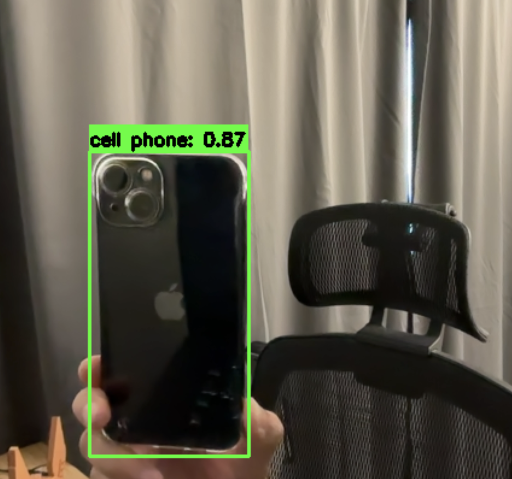
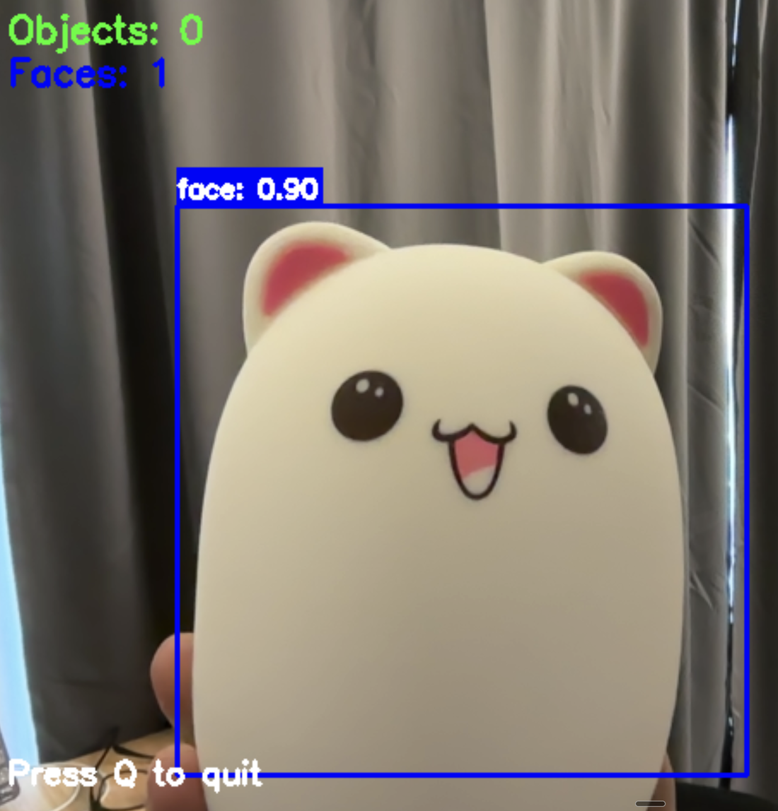
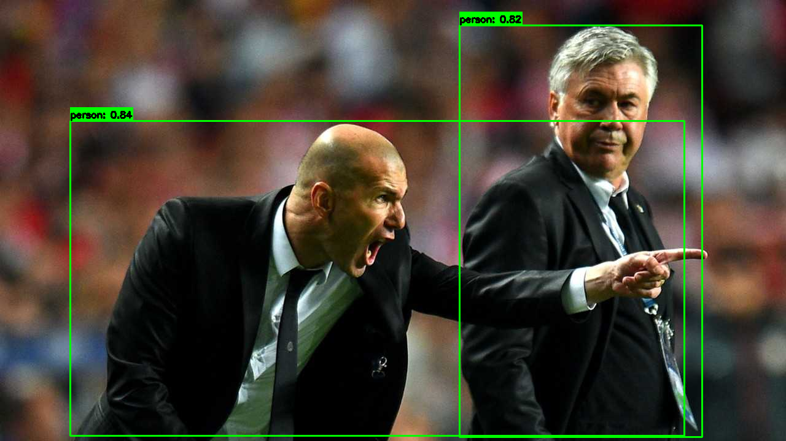
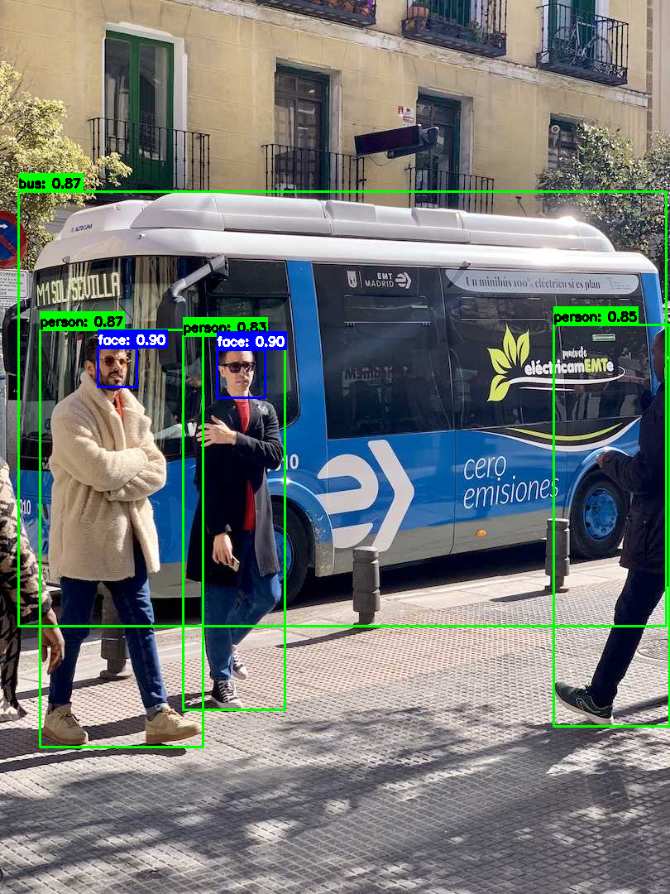

Webcam Smart Detection
A real-time webcam pipeline that finds objects and faces in the same frame and draws them the same way. The two detectors share no code, no model format and no mathematics — but they publish an identical four-key result, so the loop that renders them never learns which one produced a box. 448 lines of Python, four modules, CPU-only, no training.
- Python 3.8+
- YOLOv8 objects
- OpenCV Haar faces
- License: GPL-2.0
- 448lines across the four core modules
- 2detectors, one output contract
- 4YOLOv8 checkpoints measured here
- 34.2 msmedian YOLOv8n inference, CPU
Three jobs, one deadline
A webcam detection loop looks like it should be a dozen lines: read a frame, run a model, draw the boxes. What makes it a system is that three jobs share a single frame deadline — capture, inference and display — and one of them is far more expensive than the other two. On the machine measured below, a single YOLOv8n inference takes 34.2 ms; grabbing a frame and drawing a handful of boxes are rounding errors beside it. Miss the deadline and the window stutters, so most of the decisions in this codebase are about when that one call is allowed to happen.
The second problem is variety. Objects and faces are found by two techniques that have almost nothing in common: a convolutional network trained to recognise 80 COCO classes, and a boosted cascade of Haar-like features — an approach that predates the modern deep-learning stack by most of a decade. Wiring each one straight into the display loop would mean two loops and two drawing routines, and a third as soon as you wanted both at once. So instead they are given a common interface, and everything downstream is written against that.
The shape of the pipeline
What to notice: the two middle boxes share
nothing internally, yet everything to their right is written once and never branches on
which detector ran. That only holds because both return the same four keys. The main
application wires one detector; examples/combined_detection_demo.py wires
both on the same frame. Neither the camera code nor the drawing code changes between
those two programs.
The contract
Every detection, from either detector, is a dictionary with these four keys. This is the whole interface — it is what makes the two detectors interchangeable, and it is what the drawing code is allowed to assume.
One detection
{
"bbox": [x1, y1, x2, y2], # pixel corners, ints
"confidence": 0.87, # float
"class_id": 67, # int
"class_name": "cell phone", # str, used as the label
}Why an explicit contract rather than duck typing
Both draw routines index the same keys by name — detection["bbox"],
detection["class_name"] — so a detector that returns a differently-shaped
object fails loudly at the first drawn box rather than silently producing an empty
overlay. It also means the two detectors can be selected at the call site
(examples/combined_detection_demo.py) instead of being baked into the
application class.
How each piece works
Four modules, each with one job. The interesting decisions are in what they refuse to assume.
CameraHandler
src/camera_handler.py · 80 lines
Opens the device, requests 640×480 at 30 fps, and hands out frames. The one
non-obvious decision is that it never trusts those requested numbers.
cv2.VideoCapture.set() is a request: the driver is free to ignore
it and give you something else, and it will not tell you. So
get_camera_info() reads the properties back off the device after
negotiation, and the caller uses those.
Read back what the camera actually granted
self.cap.set(cv2.CAP_PROP_FRAME_WIDTH, 640)
self.cap.set(cv2.CAP_PROP_FRAME_HEIGHT, 480)
self.cap.set(cv2.CAP_PROP_FPS, 30)
# ... later, in the run loop:
camera_info = self.camera_handler.get_camera_info()
video_writer = cv2.VideoWriter(
output_path,
cv2.VideoWriter_fourcc(*"XVID"),
camera_info.get("fps", 30),
(camera_info.get("width", 640), camera_info.get("height", 480)),
)
This matters because VideoWriter is constructed with a frame size up
front and then encodes whatever it is handed. Give it the size you asked for rather
than the size you got, and it writes a file that plays back torn or refuses to open —
with no error at write time.
ObjectDetector
src/object_detector.py · 126 lines
Wraps Ultralytics YOLOv8. The device is chosen at construction time —
cuda if PyTorch can see a GPU, otherwise cpu — so the same
code runs on a laptop and on a CUDA box with no configuration. The confidence
threshold is passed into the model call rather than used to filter the results
afterwards, which keeps low-scoring candidates out of the non-maximum-suppression
stage instead of discarding them after it.
Device selection and inference
self.device = "cuda" if torch.cuda.is_available() else "cpu"
# ...
results = self.model(frame, conf=self.confidence_threshold)
for result in results:
for box in result.boxes:
x1, y1, x2, y2 = box.xyxy[0].cpu().numpy()
confidence = box.conf[0].cpu().numpy()
class_id = int(box.cls[0].cpu().numpy())
class_name = self.model.names[class_id]FaceDetector
src/face_detector.py · 99 linesUses OpenCV's bundled frontal-face Haar cascade, which needs a single-channel image — so the frame is converted to grayscale first and the boxes are mapped back onto the colour frame. Three parameters govern the search, and the shipped values are the subject of the first chart below.
The detection call
gray = cv2.cvtColor(frame, cv2.COLOR_BGR2GRAY)
faces = self.face_cascade.detectMultiScale(
gray,
scaleFactor=1.1, # pyramid step between successive rescalings
minNeighbors=5, # overlapping hits a region needs to survive
minSize=(30, 30), # ignore anything smaller than this
flags=cv2.CASCADE_SCALE_IMAGE
)
for (x, y, w, h) in faces:
detection = {
'bbox': [int(x), int(y), int(x + w), int(y + h)],
'confidence': 0.9, # Haar cascades don't provide confidence scores
'class_id': 0,
'class_name': 'face'
}
A Haar cascade is a boosted sequence of yes/no rectangle comparisons and produces no
calibrated probability anywhere in its output, so confidence is assigned
a fixed value to keep the same four-key contract that ObjectDetector
returns — which is why this number is identical on every face this program reports.
SmartDetectionApp
src/smart_detection_app.py · 143 lines
Owns the loop and the lifetime of everything in it. Initialisation is all-or-nothing:
if the camera or the model fails to come up, initialize() returns
False and run() exits before entering the loop, so there is
no half-initialised state to guard against later. The camera, the window and the video
writer are all released in a finally block, which is what makes
Ctrl+C a clean exit rather than a leaked device handle.
The loop and its cleanup path
try:
while self.running:
ret, frame = self.camera_handler.read_frame()
if not ret:
logger.warning("Failed to read frame from camera")
break
detections = self.object_detector.detect_objects(frame)
if detections:
frame = self.object_detector.draw_detections(frame, detections)
if video_writer:
video_writer.write(frame)
if display_window:
cv2.imshow("Smart Detection", frame)
if cv2.waitKey(1) & 0xFF in (ord("q"), 27):
break
frame_count += 1
if frame_count % 30 == 0:
logger.info(f"FPS: {frame_count / (time.time() - start_time):.2f}")
except KeyboardInterrupt:
logger.info("Application stopped by user")
finally:
self.cleanup(video_writer)The frame counter is also the FPS meter: an average since start-up, logged every 30 frames. That is a deliberately cheap measurement — it needs no timer and no extra state — but it is a cumulative mean, so it lags after a stall and settles rather than recovering. The benchmark further down this page measures differently, and says so.
It running
The first two images are captured sessions — the application window, as used. The last two were produced fresh by running this repository's own detectors over still frames, so they can be regenerated at any time from the committed generator.


0.90 label carries no information about whether the detection is
right.
yolov8n.pt at the default 0.5 threshold — drawn by
ObjectDetector.draw_detections rather than by any tool in the generator.
The boxes sit tightly on the torsos while both faces are partly out of frame, which
is the difference between this detector and the one on the left.
How the two detectors actually respond
Both charts below come from running this repository's own code. The generator that
produced them is committed at tools/generate_showcase_assets.py, and the
numbers it measured are in docs/assets/data.js.
Cascade sensitivity Parameter behaviour
scaleFactor is the step between successive pyramid levels;
minNeighbors is how many overlapping hits a region needs before it
survives. Sweeping both over one still frame gives 30 measurements. Notice which
knob actually moves the answer: changing scaleFactor changes the count at
every minNeighbors setting, while minNeighbors changes it at
only three of the six. The response is not monotonic either — the count drops to 1
across the whole scaleFactor = 1.20 column, then climbs back to
2 at 1.30 for minNeighbors 3 and 4 — because a coarser pyramid samples
fewer scales, and whether a given region is caught at all depends on whether one of the
sampled scales happens to land on it.
Method. …
What each checkpoint costs Linear fit, R² = 0.999
Four YOLOv8 checkpoints, same two frames, same machine. The larger models cost more, as you would expect — but the surprise is the shape of the cost. A straight line through these four points fits to within about 2.5 ms, and that line does not pass anywhere near the origin: it implies roughly 22 ms of work per call that does not depend on which checkpoint is loaded. The largest model is 13.5× the file size of the smallest but only 5.7× the latency, because the fixed part is shared. That is the argument for the nano default in one line: at 34 ms a frame, most of what you are waiting for is not the network.
Method. …
Running it
Install
git clone https://github.com/pengzhao-ai/webcam-smartDet.git
cd webcam-smartDet
pip install -r requirements.txt
# weights are not committed (the four checkpoints below total ~161 MB)
# — the default one downloads itself on first run
python main.pyBoth detectors on one frame
python examples/combined_detection_demo.pyCommand-line options
| Option | Description | Default |
|---|---|---|
--camera-id | Camera device ID | 0 |
--model-path | Path to YOLO model file | yolov8n.pt |
--confidence | Confidence threshold for detections | 0.5 |
--save-output | Path to save output video | None |
--no-display | Run without displaying video window | False |
--log-level | DEBUG, INFO, WARNING or ERROR | INFO |
Press q or Esc in the video window to quit, or Ctrl+C in the terminal. Both routes run the same cleanup.
The interesting one: trading object rate for frame rate
The combined demo does not run both detectors on every frame. YOLO runs every fifth frame; the cascade runs on all of them. At the 34.2 ms measured below, running YOLO on every frame would cap the whole loop at under 30 fps before drawing or display got a turn — while the cascade is cheap enough to run every frame without being the bottleneck.
Deliberate asymmetry
# Detect objects with YOLO (every 5 frames for performance)
objects = []
if frame_count % 5 == 0:
objects = object_detector.detect_objects(frame)
if objects:
frame = object_detector.draw_detections(frame, objects)
# Detect faces (every frame for responsiveness)
faces = face_detector.detect_faces(frame)
if faces:
frame = face_detector.draw_faces(frame, faces)The cost of this choice is visible in the captured frames: object boxes lag the video by up to five frames, so they visibly trail a fast-moving subject, while face boxes track it exactly. That is the trade — a stale object box is worth a responsive window.
The numbers, with the method attached
…
| Checkpoint | Size | Median | Mean | Range | Inference fps | Detections per frame |
|---|---|---|---|---|---|---|
yolov8n.pt | 6.2 MB | 34.23 ms | 34.32 ms | 29.42 – 39.36 ms | 29.2 | 2 · 4 |
yolov8s.pt | 21.5 MB | 68.73 ms | 68.61 ms | 60.64 – 76.95 ms | 14.5 | 3 · 5 |
yolov8m.pt | 49.7 MB | 122.40 ms | 122.72 ms | 108.35 – 139.60 ms | 8.2 | 4 · 5 |
yolov8l.pt | 83.7 MB | 196.20 ms | 196.13 ms | 172.90 – 220.15 ms | 5.1 | 3 · 5 |
What these numbers are and are not
They are inference time only — the call to
detect_objects(), including Ultralytics' preprocessing and non-maximum
suppression, measured on CPU with PyTorch pinned to a single thread. They are not the
application's frame rate: a real session also pays for camera capture, drawing and
display, none of which is in this table. The controller's FPS log and this benchmark
measure different things, and the frame rate you see in the window will be lower than
the "inference fps" column here.
What the design buys
- A shared result shape makes the detector a choice, not an assumption. Both detectors return the same four keys, so the render path is written once and the combined demo is a wiring change rather than a second program.
- Read hardware state back; never trust a request. The camera reports what it actually granted, and the video writer is built from that — which is the difference between a playable file and a silently corrupt one.
-
The measured cost is mostly not the model.
Roughly 22 ms of each call is independent of the checkpoint, which is why
yolov8n.ptis the default and why shrinking further would buy little. - Know what your detector cannot tell you. The cascade reports regions, not probabilities, and the toy in the second capture is the demonstration: a plausible-looking box with a number beside it that means nothing about correctness.